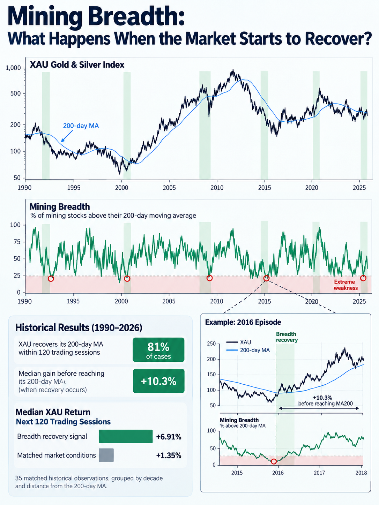

When fewer than 25% of mining stocks trade above their 200-day moving averages, the sector is experiencing extreme weakness.
But does that necessarily represent a buying opportunity?
We examined more than three decades of XAU data, focusing on periods when market breadth began recovering from extremely depressed levels while the index itself remained below its 200-day moving average.
The findings are interesting, but not as straightforward as they might seem.

Across 36 historical episodes with complete follow-up data, the XAU recovered its 200-day moving average within the following 120 trading sessions in approximately 81% of cases.
Among the episodes that achieved that recovery, the index gained a median 10.3% before reaching its 200-day moving average.
In other words, a substantial portion of the rebound often occurred while the market still appeared technically weak.
However, a critical limitation emerged.
When we compared these signals with other periods of similar market weakness, controlling for the XAU's distance from its 200-day moving average and matching by decade, the apparent advantage became much less convincing.
Does Improving Mining Breadth Provide an Edge?
The breadth signal outperformed its matched comparison in only 19 out of 35 cases (54%). Results also varied considerably across decades.
This suggests that improving breadth can precede powerful recoveries, but it does not provide a consistently reliable buy signal on its own.
The Bottom Line
Market breadth can reveal something price alone may not immediately show: the sector can begin recovering internally before the index confirms a trend reversal.
But identifying that transition is not the same as knowing how it will unfold.
Extreme breadth identifies market conditions. Improving breadth signals a potential transition. Neither guarantees that the bottom is in.
Methodology: Historical daily XAU and percentage-above-MA200 breadth data, 1990–October 16, 2026. The exploratory signal required a 10-percentage-point breadth recovery from a 60-session low below 25%, while breadth remained below 30% and the XAU remained below its MA200. Signals were spaced at least 60 trading sessions apart. Returns use daily closes, exclude trading costs, and have not been independently validated out of sample. The historical composition of the breadth universe has not been fully verified. This article is research, not investment advice.